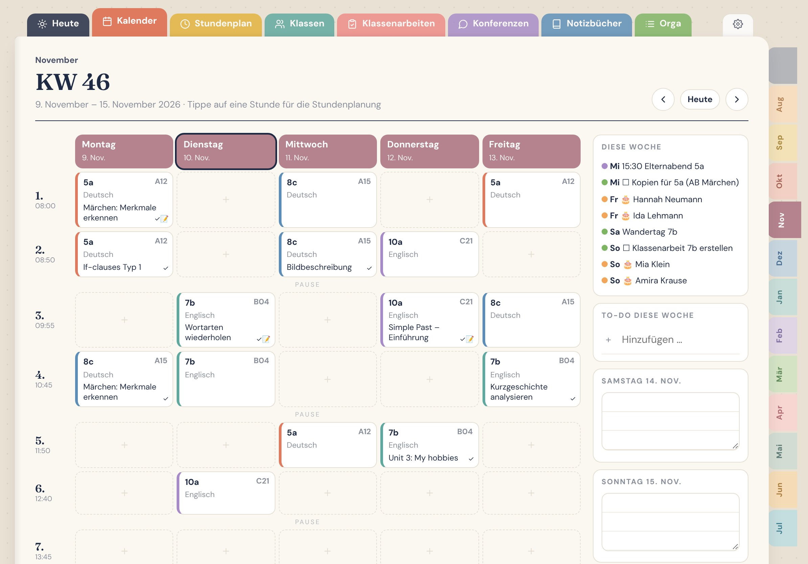
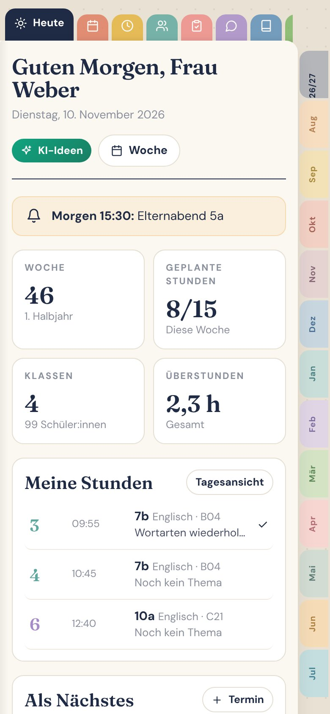
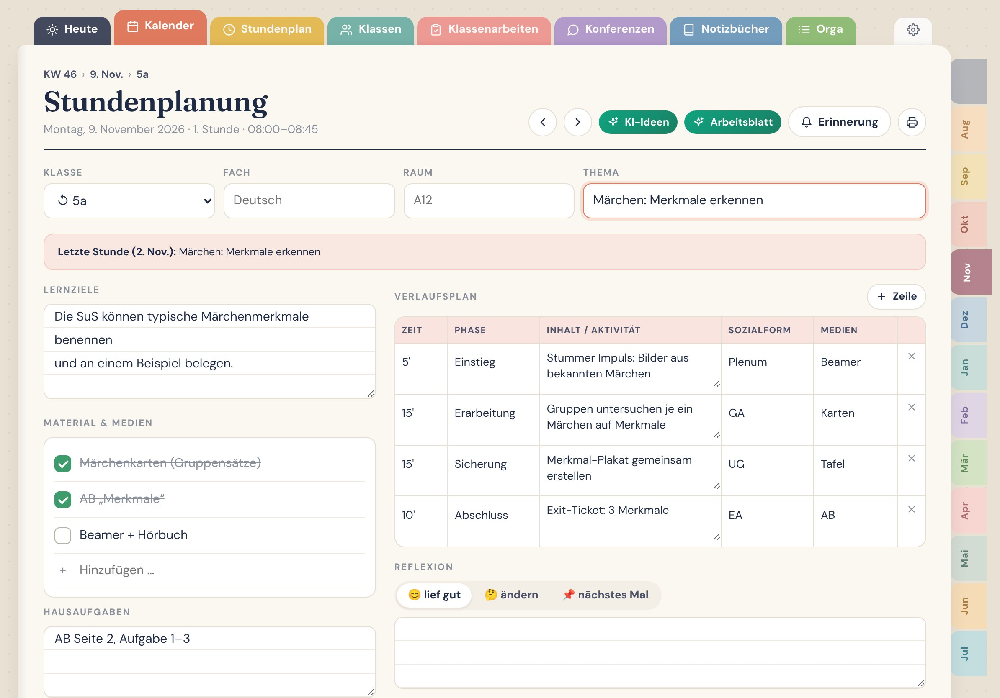
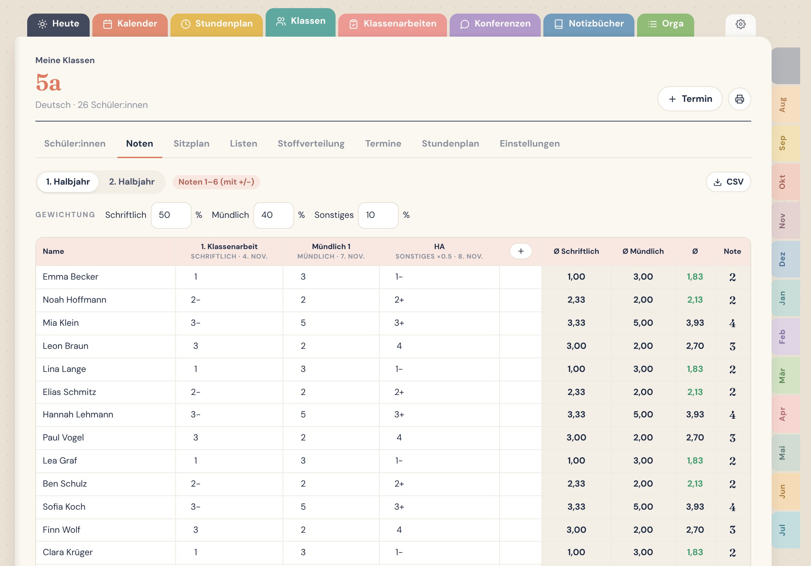
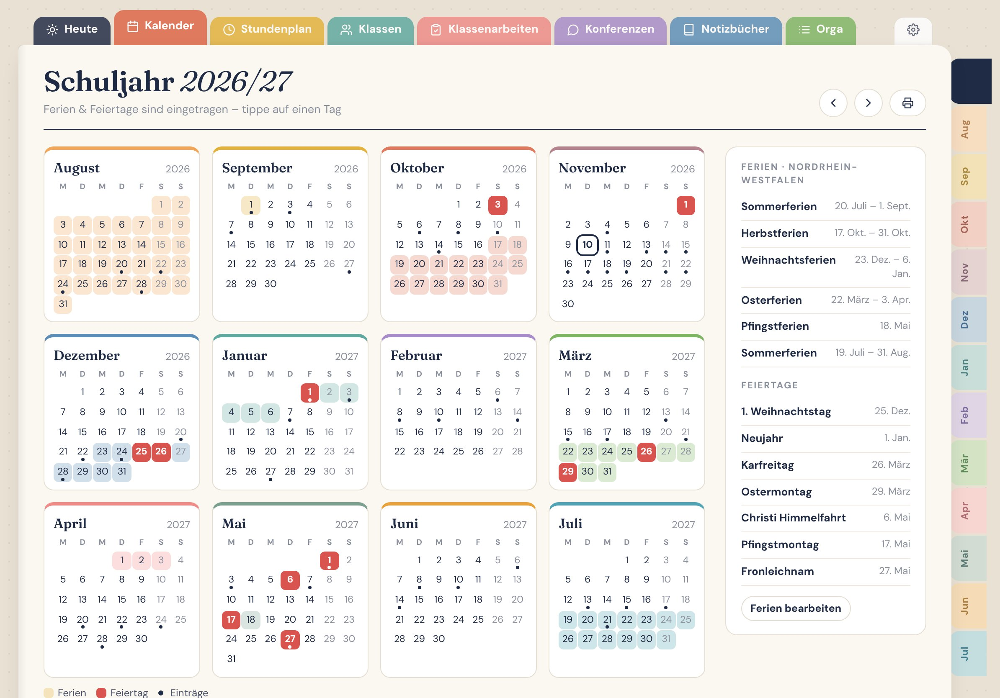
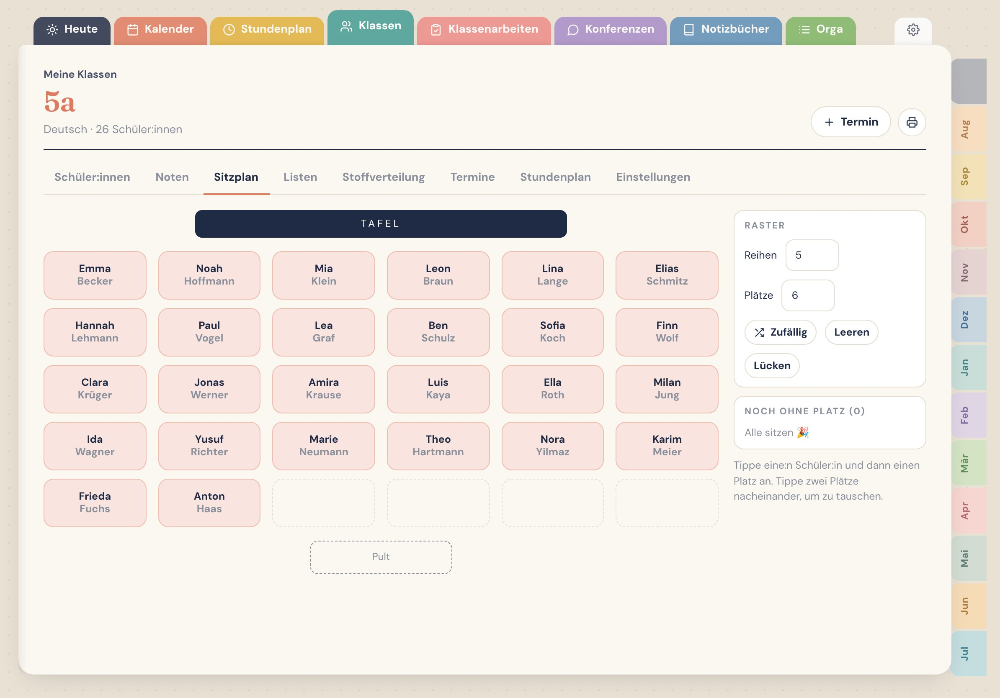
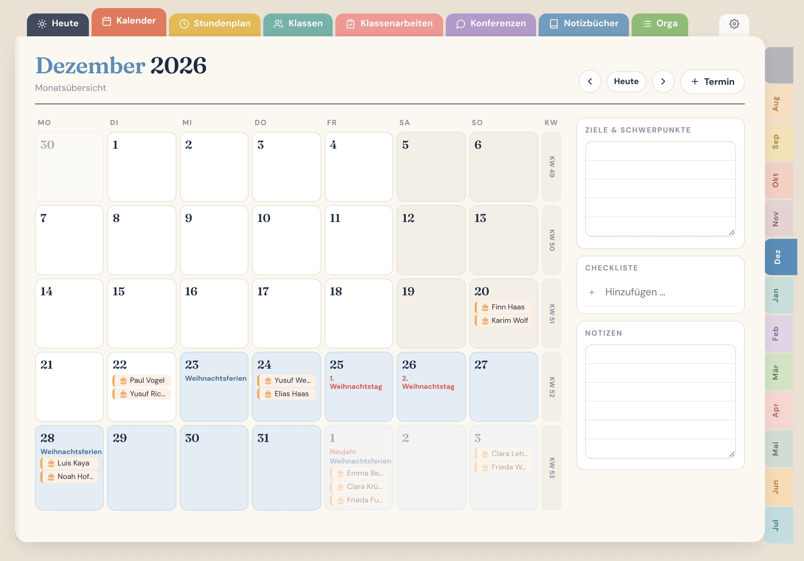
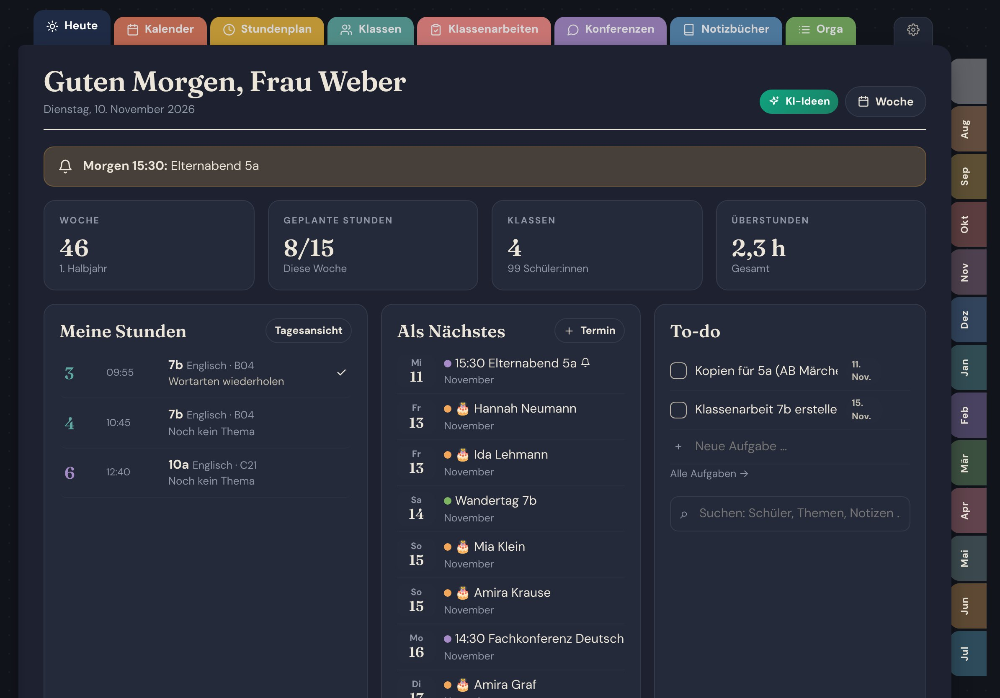

Dein Lehrerplaner. Endlich als App.
Stundenplanung, Klassen, Noten, Sitzplan, Konferenzen und Notizbücher – alles an einem Ort. Ferien & Feiertage aller 16 Bundesländer sind schon eingetragen.
Einmal kaufen · kein Abo · kein Konto · funktioniert offline


Alles, was dein Schuljahr braucht
Wie ein Papier-Lehrerplaner mit Reitern – nur dass er rechnet, erinnert und mitdenkt.
Jede Stunde der Woche öffnet ihre eigene Planung: Lernziele, Material, Verlaufsplan, Hausaufgaben, Reflexion.
Alle 16 Bundesländer 2026/27 nach KMK – plus eigene bewegliche Ferientage.
Einmal für beide Halbjahre eintragen – erscheint in jeder Woche von selbst.
Gewichtung schriftlich/mündlich, Ø und Zeugnisnote automatisch. 1–6, Punkte, /20 oder %.
Antippen, platzieren, tauschen – oder zufällig verteilen.
Termine im Kalender, Notenspalte automatisch, Notenspiegel auf einen Blick.
Tagesordnung, Protokoll und Aufgaben – unbegrenzt viele.
Tippen oder mit Apple Pencil / Stift schreiben – 10 Papiersorten.
Schülerlisten (auch per Copy & Paste), Beobachtungen, Elterngespräche, 4 Checklisten pro Klasse.
Ein Tipp öffnet ChatGPT mit Klasse, Fach und Thema – für Stundenideen und Arbeitsblätter.
To-do, Vertretung, Überstunden, Geburtstage, Pinnwand, Kopierliste, Ausleihe, Logins …
Alle Daten bleiben auf deinem Gerät. Backup per Klick – auch für den Gerätewechsel.
So sieht dein Schuljahr aus
Bunte Monatsreiter, klare Wochen, alles mit einem Tipp erreichbar.






PDF-Planer oder App?
Ein PDF ist schön – aber es rechnet nicht mit.
| PDF-Planer | Lehrerheft | |
|---|---|---|
| Stundenplanung pro Stunde | ✓ | ✓ |
| Stundenplan erscheint automatisch jede Woche | — | ✓ |
| Notendurchschnitt & Gewichtung automatisch | — | ✓ |
| Ferien deines Bundeslandes | — | ✓ |
| Suche über alle Notizen & Schüler | — | ✓ |
| iPad, Android-Tablet, Handy & PC | — | ✓ |
| Unbegrenzt Klassen, Konferenzen & Seiten | — | ✓ |
| Mit Stift schreiben | ✓ | ✓ |
In 3 Schritten startklar
Nach dem Kauf erhältst du ein PDF mit deinem persönlichen App-Link.
Mit einem Tipp installieren – öffnet sich danach wie eine echte App, auch offline.
Ferien sind sofort da. Klassen anlegen, Stundenplan eintragen – fertig.
Häufige Fragen
Ist das ein Abo?
Nein. Du zahlst einmal und nutzt das Lehrerheft ohne monatliche Kosten.
Wo werden meine Daten gespeichert?
Nur lokal auf deinem Gerät – es gibt kein Konto und keine Cloud. Mit „Backup herunterladen“ sicherst du alles in einer Datei.
Kann ich es auf mehreren Geräten nutzen?
Ja, die App läuft auf iPad, iPhone, Android, Windows und Mac. Zwischen Geräten ziehst du per Backup-Datei um.
Brauche ich GoodNotes oder eine andere App?
Nein. Das Lehrerheft läuft direkt im Browser und lässt sich wie eine App auf den Home-Bildschirm legen.
Ich unterrichte nicht in Deutschland.
Kein Problem: Wähle „eigene Ferien“, trage deine Ferien ein und stelle Sprache (DE/EN/FR) und Notensystem (1–6, 0–15, /20, %) passend ein.
Was kann die Demo?
Die Demo zeigt alle Funktionen mit Beispielklassen. Eigene Klassen und Backups gibt es in der Vollversion.
Bereit für ein entspanntes Schuljahr?
Teste die Demo in 10 Sekunden – ohne Anmeldung.